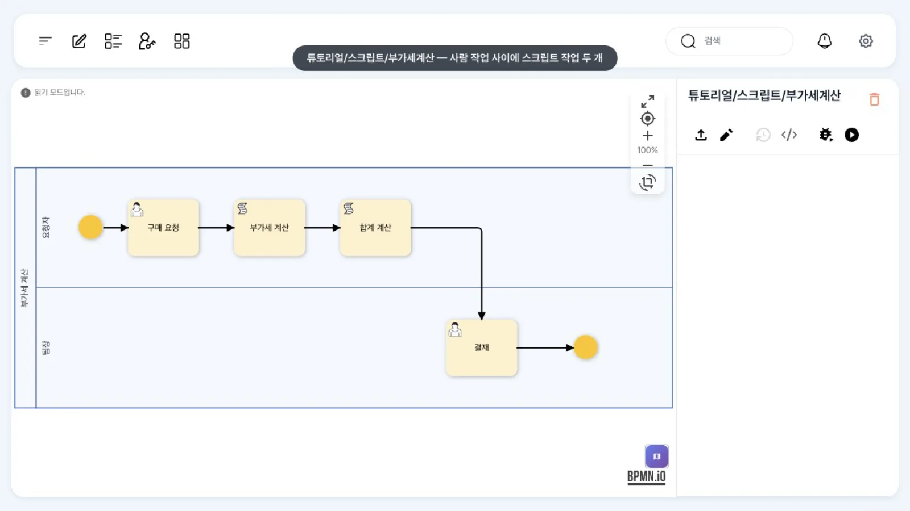
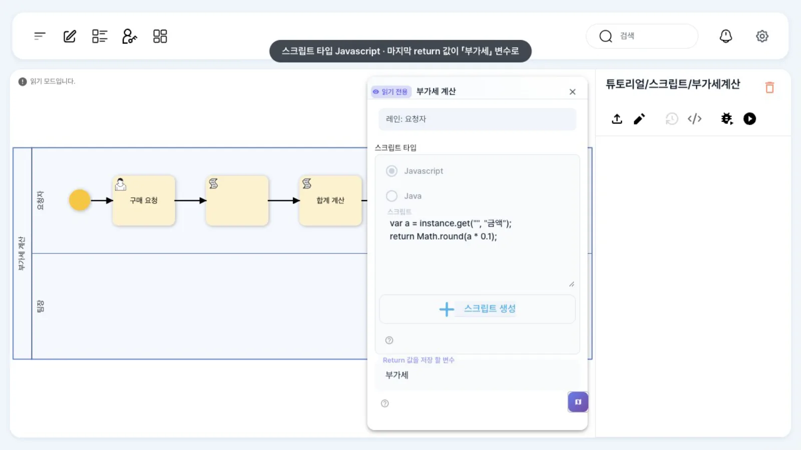
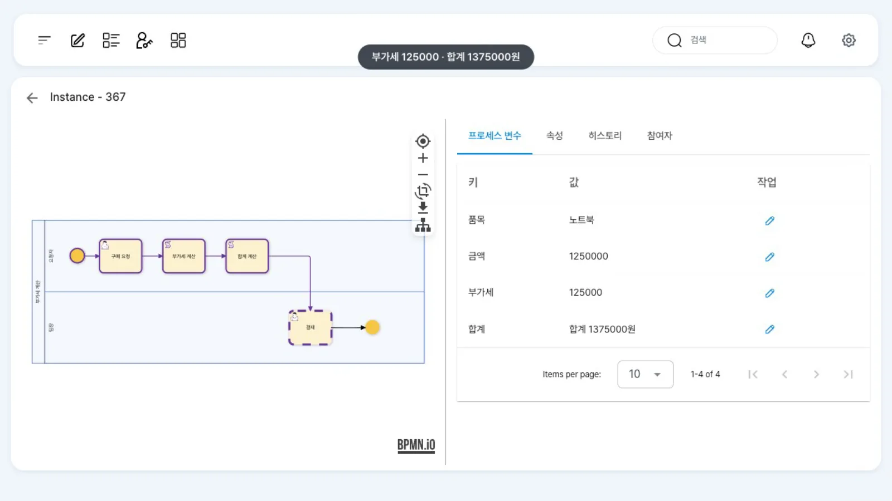

구매 금액에서 부가세(10%)를 JavaScript로, 합계 문구를 Java로 계산해 프로세스 변수에 넣습니다. 스크립트 작업은 사람이 처리할 필요 없이 바로 실행되고, 결과는 관리자 화면의 변수로 확인합니다.
무엇을 · 왜#
스크립트 작업(script task)은 엔진 안에서 짧은 코드를 실행하는 자동 작업입니다. 그림에서는 왼쪽 위에 두루마리 아이콘이 있는 사각형입니다. 변수로 계산하거나 문자열을 만들고, 다음 게이트웨이에서 확인할 값을 미리 정리할 때 씁니다. 다른 시스템을 호출하는 일은 REST 서비스 작업에 맡기세요.
uEngine6에서는 org.uengine.kernel.ScriptActivity가 맡습니다.
| 언어 | language |
실행기 | 스크립트 형식 |
|---|---|---|---|
| JavaScript | "0" |
BSF + Rhino 1.7 | 문장 + 마지막 return 값; |
| Java | "1" |
Janino(실행 시 컴파일) | 메서드 몸통. 반드시 return이 있어야 하고, instance.get은 검사 예외를 던지므로 try { … } catch (Exception e) { … }로 감쌉니다 |
- 스크립트 안에서 쓸 수 있는 이름:
instance(프로세스 인스턴스),activity(이 작업),definition(정의),util. - 변수 읽기:
instance.get("", "변수이름")(첫 인자는 실행 범위, 보통 빈 문자열). return으로 반환한 값은 「Return 값을 저장 할 변수」(JSONout)에 들어갑니다.- 이 장의 두 스크립트는 JDK 21 스택에서 둘 다 실행됐습니다.
따라 하기#
- 정의 보기. 홍길동으로
튜토리얼/스크립트/부가세계산을 엽니다. 「구매 요청 → 부가세 계산 → 합계 계산 → 결재(윤팀장)」입니다. 가운데 두 작업이 스크립트 작업입니다.
부가세계산 정의 - JavaScript 스크립트. 「부가세 계산」을 더블클릭합니다. 「스크립트 타입」은 Javascript이고, 「스크립트」에는 아래 코드가 들어 있습니다. 「Return 값을 저장 할 변수」는
부가세입니다.var a = instance.get("", "금액"); return Math.round(a * 0.1);
스크립트 작업 패널(JavaScript) - Java 스크립트. 「합계 계산」은 「스크립트 타입」이 Java입니다. 메서드 몸통이므로
return으로 끝나고, 전체를try/catch로 감쌌습니다. 반환 변수는합계입니다.try { long a = Long.parseLong(String.valueOf(instance.get("", "금액"))); long v = ((Number) instance.get("", "부가세")).longValue(); return "합계 " + (a + v) + "원"; } catch (Exception e) { return "오류 " + e; } - 실행. 최구매로 같은 정의에서 「실행」을 누르고, 품목
노트북, 금액1250000으로 「완료」합니다. - 스크립트는 바로 실행됩니다. 윤팀장의 업무 목록에 「결재」가 곧바로 생깁니다. 작업 화면 그림에서 두 스크립트 작업이 완료된 경로(보라색)로 보입니다.
- 변수 확인. 홍길동이 관리자 상세(
/admin/<인스턴스 ID>)의 「프로세스 변수」 탭을 엽니다.부가세가125000,합계가합계 1375000원입니다.
관리자 상세의 계산 결과
설정 레퍼런스#
패널 ↔ JSON#
| 패널 칸 | JSON 속성 | 값 |
|---|---|---|
| 「스크립트 타입」 Javascript / Java | language |
"0" / "1" |
| 「스크립트」 | script |
코드 문자열(줄 바꿈은 \n) |
| 「Return 값을 저장 할 변수」 | out.name (+ out.type) |
{"name":"부가세","type":"java.lang.Number"} |
| — | _type |
org.uengine.kernel.ScriptActivity |
이 장에서 배포한 정의(발췌)#
<bpmn:scriptTask id="Vat" name="부가세 계산">
<bpmn:extensionElements><uengine:properties><uengine:json>
{"_type":"org.uengine.kernel.ScriptActivity","language":"0",
"script":"var a = instance.get(\"\", \"금액\");\nreturn Math.round(a * 0.1);",
"out":{"name":"부가세","type":"java.lang.Number"}}
</uengine:json></uengine:properties></bpmn:extensionElements>
</bpmn:scriptTask>
<bpmn:scriptTask id="Sum" name="합계 계산">
… {"_type":"org.uengine.kernel.ScriptActivity","language":"1","script":"try {\n long a = …","out":{"name":"합계","type":"java.lang.String"}} …
</bpmn:scriptTask>
반환 변수(부가세·합계)도 정의의 프로세스 변수로 선언해 둡니다(Number, Text).
실행 결과(이 장을 촬영할 때의 실행)#
| 변수 | 값 | 만든 곳 |
|---|---|---|
금액 |
1250000 | 구매 요청(사람 입력) |
부가세 |
125000 | 부가세 계산(JavaScript) |
합계 |
합계 1375000원 |
합계 계산(Java) |
흔한 실수#
| 증상 | 원인 | 고치는 법 |
|---|---|---|
| Java 스크립트가 컴파일되지 않음 | instance.get의 검사 예외를 처리하지 않음 |
몸통 전체를 try { … } catch (Exception e) { … }로 |
Java에서 ClassCastException |
화면 입력값이 문자열로 들어옴 | Long.parseLong(String.valueOf(…))처럼 문자열을 거쳐 변환 |
| 반환 변수가 비어 있음 | 마지막에 return이 없음, 또는 변수 이름이 정의에 없음 |
return을 넣고 프로세스 변수를 선언 |
| 스크립트가 길어짐 | 외부 호출·복잡한 규칙을 스크립트에 넣음 | 호출은 서비스 작업, 판단표는 규칙표(DMN) |
확인 문제#
Java 스크립트에서 `try/catch`를 빼면 어떻게 되나요?
instance.get이 검사 예외(Exception)를 던지도록 선언돼 있어 Janino가 컴파일하지 못합니다. Java 스크립트는 몸통 전체를 try/catch로 감싸세요.
부가세가 10만 원 이상이면 대표에게 보내려면 무엇이 필요한가요?
스크립트 작업 뒤에 배타 게이트웨이를 두고, 나가는 흐름에 {"key":"부가세","condition":">=","value":100000} 조건을 답니다. 부가세는 반환 변수(out)이자 정의에 선언된 프로세스 변수이므로 조건에서 바로 읽을 수 있습니다.